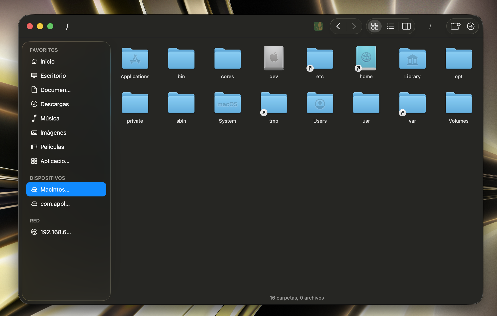

Stop fighting Finder when copying to your NAS.
R2 Finder is a free, open-source file manager for macOS that replaces Finder's broken SMB copy
stack with rsync. No more cryptic error code -36, no more
stalled transfers, no more .DS_Store noise on your server.

Why does this app exist?
macOS Finder has a long-standing problem when copying files to volumes exposed over Samba (SMB) — particularly on NAS devices like Synology, QNAP, TrueNAS, Unraid, or any Linux/FreeBSD Samba server. Depending on the SMB dialect, extended-attribute support, or server-side settings, Finder will frequently throw errors like:
"The operation can't be completed because an unexpected error occurred (error code -36)."
"The Finder can't complete the operation because some data in <file> can't be read or written. (Error code -36)"
…or it will silently stall mid-transfer, leaving partial files on the remote share. The root
cause is that Finder tries to copy macOS-specific metadata (resource forks, extended
attributes, .DS_Store entries, AppleDouble files prefixed with
._) alongside the actual file data. Many Samba configurations reject or
mishandle those writes.
How R2 Finder solves it
R2 Finder uses rsync for every copy and move operation. It
ships with a bundled rsync binary and invokes it with archive mode:
rsync -a -P [--ignore-existing] [--remove-source-files] <sources> <destination>/- -a (archive mode) — preserves permissions, timestamps and symlinks without pushing macOS-specific resource forks that Samba rejects.
- -P —
--partial+ per-file progress. Interrupted transfers resume from where they stopped. - --ignore-existing — safe copy without overwriting when no collision override is chosen.
- --remove-source-files — clean atomic move: source is only deleted once the destination is fully written.
Because rsync speaks the remote filesystem's language and skips the
extended-attribute overhead, transfers to Samba shares complete reliably where Finder fails.
Features
- Reliable SMB / NAS copy — every transfer goes through
rsync, with a progress window showing speed, ETA and per-file status. - Resume interrupted transfers — partial files are picked up where they left off, no need to restart a multi-GB copy from zero.
- Cut / Copy / Paste — standard
⌘C/⌘X/⌘V, compatible with files copied from macOS Finder itself. - Force-move on paste — hold
Optionwhile pasting to move instead of copy. - Drag and drop — between R2 Finder windows and from/to other applications.
- Quick Look preview — press
Spaceto preview any file, just like Finder. - Multiple view modes — icon grid, list view, and column view (Miller columns).
- Smart sidebar — favourites (Home, Desktop, Documents, Downloads…), mounted volumes that auto-refresh on mount/unmount, and discovered SMB shares on the local network.
- Network discovery — finds SMB servers on your LAN and shows them under the Network section.
- Inline rename and new folder — keyboard-driven, familiar shortcuts (
⌘⇧N). - Show / hide hidden files — toggle dotfiles with a single shortcut.
- Trash or permanent delete — move to Trash by default, or hold
Optionto delete permanently. - Archive support — create and split archives with a bundled
7zzbinary, with progress monitoring. - Back / forward navigation — per-window history, like a browser.
- Multiple independent windows — open as many as you need, each with its own history.
- Native Cocoa UI — built in Objective-C and Zig, no Electron, no web tech, <5 MB app bundle.
- Open source, no telemetry — the code is on GitHub. It never phones home.
Who is this for?
- NAS owners — Synology, QNAP, TrueNAS, Unraid, Asustor, or any self-hosted Samba server.
- Homelab users — anyone who has ever shouted at Finder while moving media files to a home server.
- Video editors and photographers — copying large assets to network storage is a daily pain. R2 Finder makes it boringly reliable.
- Small studios and offices — sharing files across a LAN via Samba without buying a macOS server.
- Anyone fed up with error -36 — if you've Googled that error number, this app is for you.
Download and install
R2 Finder requires macOS 13 (Ventura) or later and runs natively on Apple Silicon.
Download the latest DMG from GitHub Releases
Open the .dmg, then drag R2 Finder.app to your
/Applications folder.
xattr -d com.apple.quarantine /Applications/R2\ Finder.appFrequently asked questions
Is it a fork of Finder?
No. It is a fresh macOS application written from scratch in Zig (for filesystem operations) and Objective-C / Cocoa (for the UI). It does not use or modify any part of Apple's Finder.
Does it replace Finder?
No — it runs alongside Finder. You can keep using Finder for everything else and only open R2 Finder when you need to copy or move files to a Samba share.
Why not just use the command line?
You absolutely can, and many people do. R2 Finder exists for everyone who prefers a graphical file manager, needs drag-and-drop, or shares a Mac with less technical family members / coworkers.
Is it free? Is it open source?
Yes to both. The full source code is available on GitHub. There is no paid tier, no telemetry, and no account required.
Does it work on Intel Macs?
The current build targets Apple Silicon (arm64). Intel support is possible but not a priority — PRs welcome.
Can it copy between two remote SMB shares?
Yes. Because it uses rsync, you can copy directly from one mounted share to
another without having to stage through local disk.